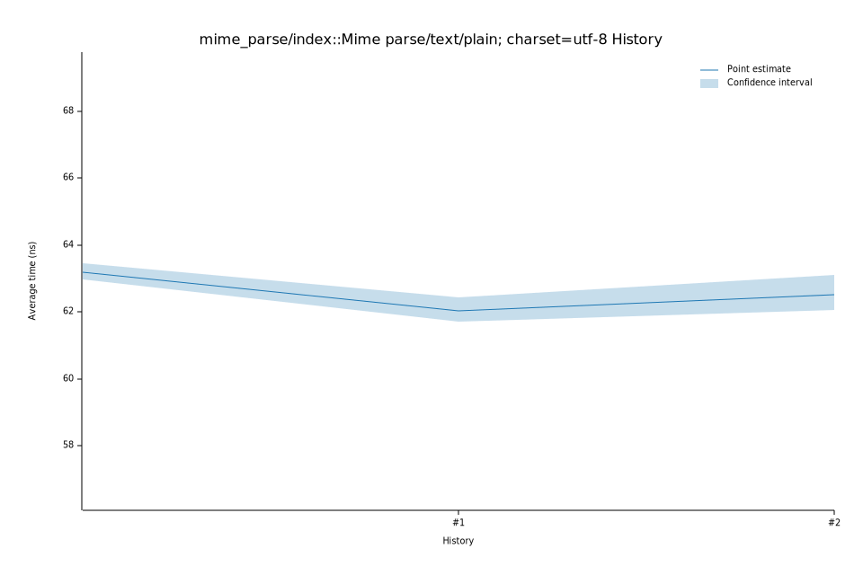

# 32025-10-14T15:35:20-07:00
|
Lower Bound |
Estimate |
Upper Bound |
| Value: |
62.96ns |
63.29ns |
63.71ns |
| Throughput: |
378.67MiB/s |
376.72MiB/s |
374.20MiB/s |
| Change in Value: |
-4.8755% |
-1.6109% |
+1.6729% |
| Change in Throughput: |
+5.1254% |
+1.6372% |
-1.6454% |
Change within noise threshold.
# 22025-10-05T14:42:56-07:00
|
Lower Bound |
Estimate |
Upper Bound |
| Value: |
62.06ns |
62.52ns |
63.11ns |
| Throughput: |
384.17MiB/s |
381.32MiB/s |
377.79MiB/s |
| Change in Value: |
-0.6568% |
+3.2915% |
+7.0595% |
| Change in Throughput: |
+0.6612% |
-3.1866% |
-6.5940% |
Change within noise threshold.
# 12025-10-05T13:01:35-07:00
|
Lower Bound |
Estimate |
Upper Bound |
| Value: |
61.73ns |
62.04ns |
62.45ns |
| Throughput: |
386.23MiB/s |
384.31MiB/s |
381.80MiB/s |
| Change in Value: |
-1.8946% |
+0.4059% |
+3.4539% |
| Change in Throughput: |
+1.9311% |
-0.4042% |
-3.3386% |
Change within noise threshold.
# 02025-10-05T12:59:59-07:00
|
Lower Bound |
Estimate |
Upper Bound |
| Value: |
62.98ns |
63.20ns |
63.47ns |
| Throughput: |
378.54MiB/s |
377.26MiB/s |
375.66MiB/s |